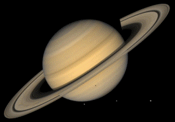

| Jupiter | Saturn | Neptune | Mercury | |
|---|---|---|---|---|
| Images of Nakib's Planets | |
 | |
|
| Mass (10^24 kg) | 1,898.13 | 568.32 | 102.409 | 0.33010 |
| Volume (10^10 km^3) | 143,128 | 82,713 | 6,254 | 6.083 |
| Ellipticity (Flattening) | 0.06487 | 0.09796 | 0.01708 | 0.0009 |
| Gravity (mean, 1 bar) (m/s^2) | 25.92 | 11.19 | 11.27 | 3.70 |
| Escape velocity (km/s) | 59.5 | 35.5 | 23.5 | 4.3 |
| Tropical orbit period (days) | 4,330.595 | 10,746.94 | 59,799.9 | 87.968 |
| Length of day (hrs) | 9.9259 | 10.656 | 16.11 | 4222.6 |